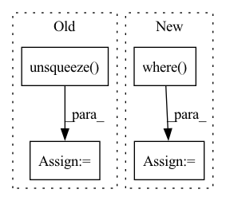

Pattern ID :13181
Before Change
input = torch.clamp(input, -1+eps, 1-eps)
theta = torch.arccos(input) // (batch_size, num_classes)
theta_modified = theta + margin // (batch_size, num_classes)
mesh = torch.arange(0, num_classes).unsqueeze(dim=0) // (1, num_classes)
mesh_target = target.unsqueeze(dim=1) // (batch_size, 1)
condition = mesh==mesh_target // (batch_size, num_classes)
theta_modified = torch.where(condition, theta_modified, theta)
cos = scale * torch.cos(theta_modified) // (batch_size, num_classes)
indices = num_classes * torch.arange(batch_size) + target // (batch_size,)
cos_target = torch.take(cos, indices) // (batch_size,)
loss = - cos_target + torch.logsumexp(cos, dim=1)
After Change
if self.easy_margin:
cos_phi = torch.where(cos_th < 0, cos_th, cos_phi) // (batch_size, num_classes)
else:
cos_phi = torch.where( cos_th > self.cos_pi_m, cos_th - margin, cos_phi) // (batch_size, num_classes)
// For non-target class
mask = F.one_hot(target, num_classes=num_classes) // (batch_size, num_classes)In pattern: SUPERPATTERN
Frequency: 3
Non-data size: 4
Instances Fragment ID: 44564215
Project Name: tky823/dnn-based_source_separation
Commit Name: a4bde6a5794ce4ec526ff846e07a4de4de24ab04
Time: 2022-02-10
Author: delta9guitar97@gmail.com
File Name: src/criterion/metric_learn.py
M Class Name: AdditiveAngularMarginLoss
N Class Name: AdditiveAngularMarginLoss
M Method Name: forward(4)
N Method Name: forward(4)
M Parent Class: nn.Module
N Parent Class: nn.Module
M File Name: src/criterion/metric_learn.py
N File Name: src/criterion/metric_learn.py
M Start Line: 168
M End Line: 184
N Start Line: 181
N End Line: 199
Before Change
emission_pred, torch.tensor([-1e-38]).to(device)) // was -float("Inf"), changed & nan errors stopped (nan from logsumexpbackward)
// create "zero_plane" for next bit:
zero_plane = torch.unsqueeze( -1e-38*torch.ones([batch_size, fb_max_length]), dim = 2) .to(device)
// put "zero_plane" at beginning of the emission probabilities to be put in
// the place of the "padding" phoneme (which has the index 0)After Change
mask_phn_lens = (
torch.arange(U_max).to(device)[None, :] < phn_lens_abs[:, None]
)
emiss_pred_useful = torch.where(
mask_phn_lens[:, None, :],
emiss_pred_useful,
torch.tensor([1e-38]).to(device),
)
emiss_pred_useful = emiss_pred_useful.permute(0, 2, 1)
return emiss_pred_useful Fragment ID: 44564214
Project Name: speechbrain/speechbrain
Commit Name: cc600a8d98ce0d7f63e3ceef4dce88dbd7928a63
Time: 2020-06-01
Author: rastorge@eos18.server.mila.quebec
File Name: speechbrain/alignment/aligner.py
M Class Name: ViterbiAligner
N Class Name: ViterbiAligner
M Method Name: make_emiss_pred_useful(5)
N Method Name: make_emiss_pred_useful(5)
M Parent Class:
N Parent Class:
M File Name: speechbrain/alignment/aligner.py
N File Name: speechbrain/alignment/aligner.py
M Start Line: 104
M End Line: 123
N Start Line: 104
N End Line: 133
Before Change
min_values, min_idx = torch.where(other_idx, values, values.max()).min(dim=-1)[0] // (C)
min_labels = labels.gather(dim=1, index=min_idx.unsqueeze(1)).flatten() // (C)
min_labels_counts = labels.eq(min_labels.unsqueeze( 1) ).int().sum(dim=1) // (C)
condition2 = min_labels.ge(self.n_samples - 2) // todo: Not sure: self.n_samples -> self.seed_num
idx_list = condition2.nonzero()[:self.top_n_neurons]
neuron_dict[layer] = {int(idx): int(min_labels[idx]) for idx in idx_list}After Change
condition1 = labels[:, :, 0].eq(_label) // exclude the ground-truth labels
values = torch.where(condition1, values[:, :, 1] - values[:, :, 2],
values[:, :, 0] - values[:, :, 1]) // (C, batch_size)
labels = torch.where( condition1, labels[:, :, 1], labels[:, :, 0]) // (C, batch_size)
mode_labels = labels.mode(keepdim=True)[0] // (C, 1) The most frequent label
mode_idx = labels.eq(mode_labels) // (C, batch_size)
mode_labels_counts = mode_idx.sum(dim=-1) // (C)
condition2 = mode_labels_counts.ge(self.seed_num * 0.75)
idx_list = condition2.nonzero().flatten().tolist()
idx_list = sorted(idx_list, key=lambda idx: float(values[idx][mode_idx[idx]].min()))[:self.top_n_neurons]
neuron_dict[layer] = {int(idx): int(mode_labels[idx]) for idx in idx_list}
prints("{green}{layer:<20}: {reset}".format(layer=layer, **ansi), indent=4) Fragment ID: 44564204
Project Name: ain-soph/trojanzoo
Commit Name: 1684c28ef38502abb83d37beb845b69007e33274
Time: 2020-07-07
Author: ain-soph@live.com
File Name: trojanzoo/defense/backdoor/abs.py
M Class Name: ABS
N Class Name: ABS
M Method Name: find_min_max(3)
N Method Name: find_min_max(3)
M Parent Class: Defense_Backdoor
N Parent Class: Defense_Backdoor
M File Name: trojanzoo/defense/backdoor/abs.py
N File Name: trojanzoo/defense/backdoor/abs.py
M Start Line: 210
M End Line: 225
N Start Line: 234
N End Line: 254